0. 課程資訊與教材
| 課程名稱 | EP202607.22「生成式AI簡報工具：一次掌握6種簡報工具」（年中共學 5 天系列之一） |
|---|---|
| 頻道 | 生成式 AI 應用電台・年中共學 |
| 教材 | 官方課程簡報 13 頁（逐頁原圖全收錄）＋錄影回放 63.9 分鐘 |
| 一句話先懂 | 六種工具各有定位：Gemini 內建 Google 生態系、ChatGPT 靠 Image 2.0 畫圖再套版、Claude 走 PowerPoint 增益集但關卡較多、NotebookLM 最會套版、Gamma 是最老牌但也追上 Agent 浪潮、Manus 已轉為點數收費。 |
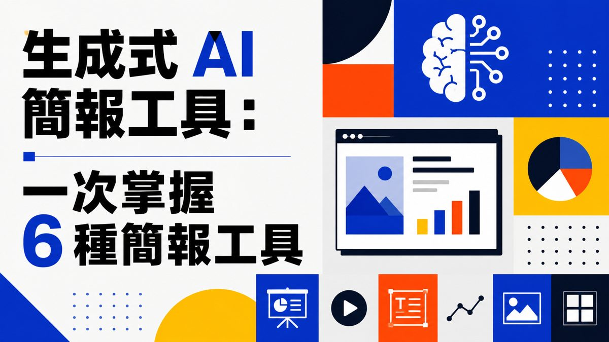
1. 開場：不只六種，工具全景
逐字稿原音（00:13–04:19）——開場先講這堂課的定位與 AI 簡報工具的現況。
- 今天做什麼：「今天要談的是這個，如何做簡報、如何用AI做簡報。」
- 現在的程度做到什麼程度：「您是要手把手的像傳統的AI一問一答的做，或者是您要讓Agent一口氣做完的都有——基本上現在工具會慢慢走向有Agent，甚至連我們熟悉的PPT都已經有AI Agent。」
- 免費 vs 付費：「這都是有一些是要付費，有一些是免費的……當然很多人會問我說免費的功能未來會不會收費？我猜會啦，一開始他們的策略都是這樣，免費的讓大家用，大家越來越多人用的時候，開始做收費的動作。」
- 不只六種：「好，不只六種，今天看時間，我就盡量講，我們先從最簡單的開始。」
2. Gemini 簡報系列：一次認識 3 種應用
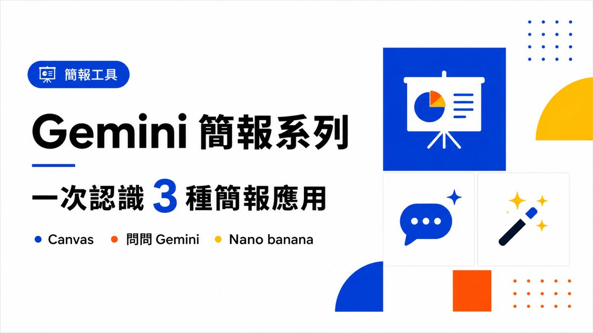
① Canvas：連結 Google 簡報
逐字稿（04:26–05:20）：早期大家使用 Gemini，打開之後在對話框輸入、選擇 Canvas，直接用中文寫「幫我製作有關於無人機以及AI技術的相關簡報」——「當你開了這個畫布的功能，等於說讓你的AI去連接到所謂的Google簡報的功能，他做完就會放在Google簡報。」
② 問問 Gemini：對話發想
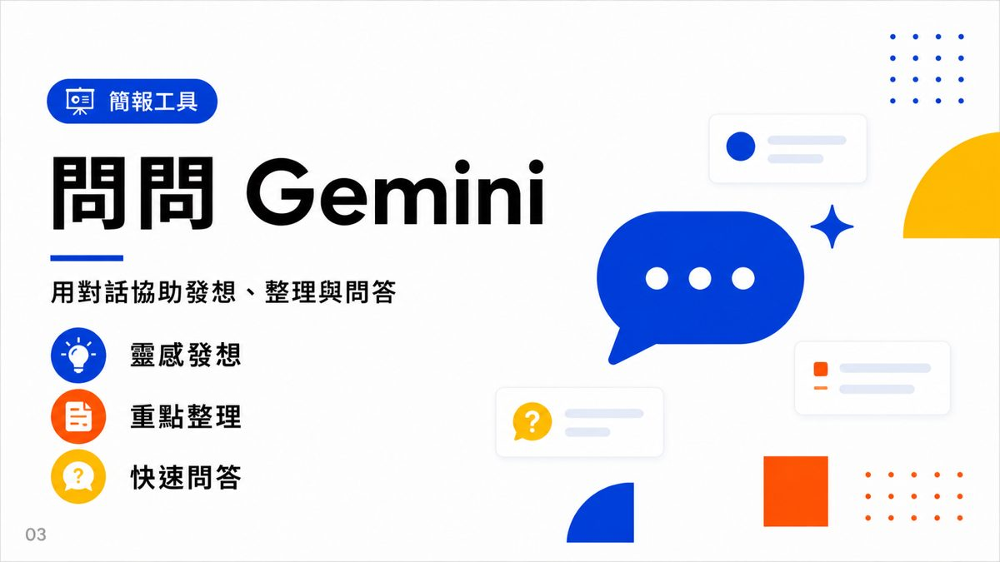
③ Nano banana：輕量視覺延伸＋YAML 鎖定格式
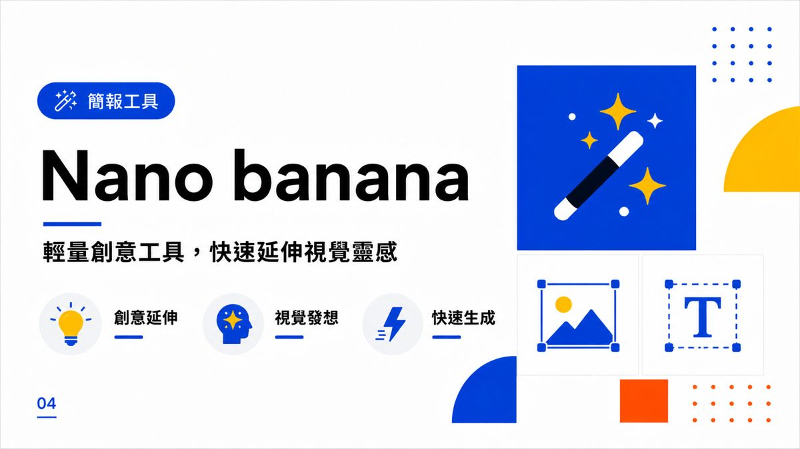
逐字稿（09:13–10:32）：早期在 GPT 的 Image 2.0 還沒出來之前，大部分都用 Nano Banana 一頁一頁做簡報。最早會用 YAML 格式鎖定「我要幾頁簡報」，讓輸出比較聽話。示範指令：「幫我製作三頁圖文並茂的無人機跟AI技術，第一頁是封面，第二頁是兩個技術之間的結合，第三個是未來的展望，幫我製成三張簡報，然後寫成YAML格式，風格是玩具總動員的風格。」
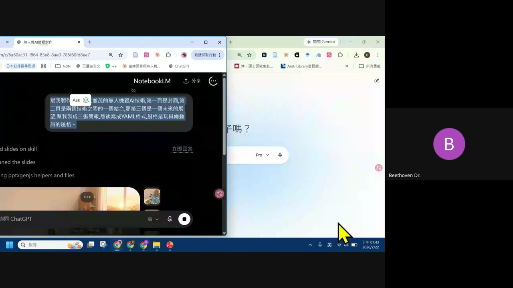
3. ChatGPT 簡報系列：一次掌握 4 大功能
逐字稿（12:55–13:10）：「早期GPT做簡報非常非常難看，他的文字會非常陽春。不過他現在學聰明了，他會自己去導入用他擅長畫圖的 Image 2.0 先把圖畫出來，然後等一下他會自己把文字放進去。」
套版技巧：先滿意一張，再要求依樣做完
逐字稿（33:20–33:39）：「除了會套版的還有誰？GPT也非常非常會套——如果你第一張覺得這個風格還不錯，那我接下來的一二三頁要跳套，這樣子跟他說：請按照這個風格，依序的做完。」
Image 2.0 解構的極限
逐字稿（34:13–35:25）：「GPT本身畫圖的力量很強，所以他的解構頂多就是把這張圖……這個小男孩你可以自己改，這一個也可以自己改，不過這些文字都不能改，他就是幫你做好了。」若要更完整拆解可下指令「把這張簡報詳細的進行拆解，我每一個圖層、每一個字到每個圖我都要可以動，請你重新繪製，分別繪製出來之後重新組成PPTX檔給我」，但講師建議：「如果你想要改的話，還不如就是用Canva，我想這個魔法圖層的技術未來會越來越普遍。」
ChatGPT 的 PowerPoint 增益集（PBT）
逐字稿（43:42–44:35）：這其實是 Codex 的功能，在 PowerPoint 增益集裡下載安裝，讓 ChatGPT 免費版就能用——「但是你的要求，你的PowerPoint要求要2019之後的版本，而且要正版。」找不到增益集的位置：「按檔案，然後按其他，按選項，然後在自訂功能區這邊，有一個增益集，把它打開，打開之後他就會出現在這裡。」可在裡面設定固定指示，例如「我要求字體一律放大，至少要24」，也能導入自訂 Skill。
4. Claude 簡報系列＋PowerPoint AI Agent
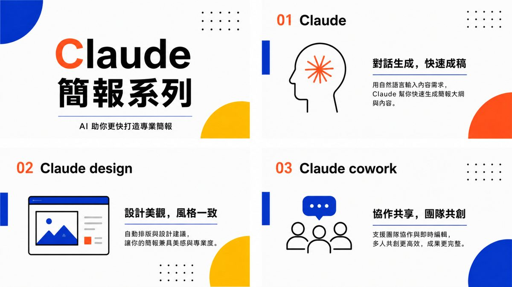
Claude 版 PowerPoint 增益集，關卡比 ChatGPT 多
逐字稿（44:47–46:20）：講師實測比較 ChatGPT／Codex 與 Claude 兩種 PowerPoint 增益集的差異：「Claude比較複雜，他必須得要Claude的付費版，然後呢你要365，你要Microsoft 365，他才會讓你用——就是Claude要付費，然後也要365才能使用。我必須要跟大家講，他關卡比較多一點，他GPT的Codex比較簡單一點。」
5. NotebookLM 簡報系列：YAML 格式＋套版
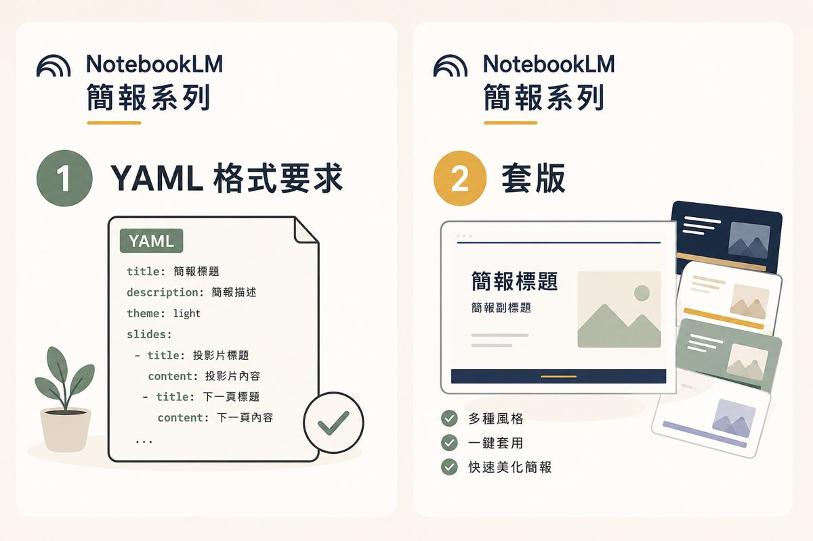
逐字稿（31:23–31:40）：「除了會套版的還有誰？」——「這個NotebookLM非常會套版……你要讓NotebookLM的東西做好，壓模（YAML鎖定格式）是一個非常需要的東西，再來是套版，如果你給他一個風格，例如我喜歡這個藍色的風格……這個技術大概是去年6月多就有的技術。」
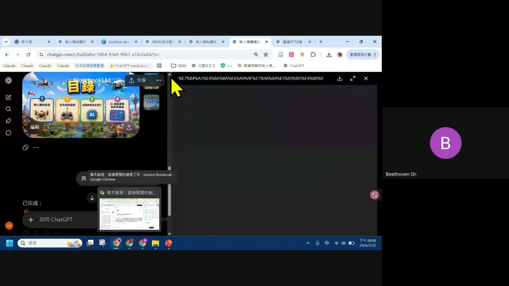
字型／版型無法改？用 Canva 魔法圖層解構
逐字稿（1704–1845s）：真實學員在直播聊天室反映「我在notebookLM做簡報，但是想改字型不出來，要用什麼替換」。講師現場示範解法：把圖片貼上 Canva，跟它說「請使用魔法圖層，把這張圖解構出來」——「他就會把這張圖，像是您在畫Illustrator裡面的每一個圖層，可能底圖一張，然後一張一張變成各自獨立的物件，然後他就可以做移動，文字也可以。」若要整份簡報一起拆，可以把 PDF 整份丟進 Canva AI：「把整個簡報檔給他，用PDF，動模把圖層、內頁都拆開……還是可以讀，然後他有些字讀錯了，你可以自己改一下就好。」
6. Gamma 簡報新功能：老牌也追上 Agent 浪潮
逐字稿（46:56–47:34）：「很多人說的是，要提到簡報你總不能忘記最早期的Gamma吧，我們做簡報的十組AI做簡報，Gamma算是最早期，大概2023年的時候正夯……他現在當然沒有被時代淘汰，不過他其實有新功能，除了我們早期的一頁一頁打這些功能之外，他也跟著更新了Agent的功能——他怕他被時代淘汰掉，所以他也會跟著這個時代一起進步。」
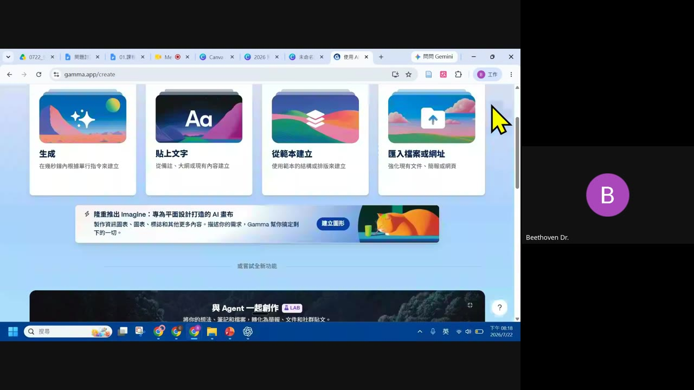
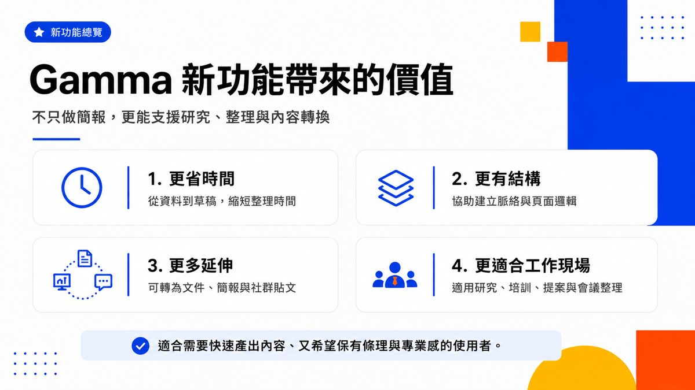
7. Manus 簡報功能＋其他花絮工具
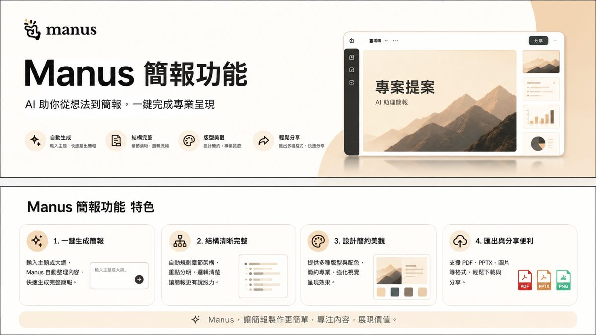
逐字稿（11:07–12:09）：直播中有學員提問 Manus，講師直接評價：「Manus最近都是要收所謂的點數，以點數為主……老實說Manus現在做簡報的人應該比較少。」
逐字稿（48:18–49:00）：「Manus的進步是什麼？就是他為了避免被取代，所以他在做投影片的時候，他可以讓你選擇你的圖片是要哪幾種模式——是要屬於完全不能改的圖片版，還是可以改的PowerPoint版本，就看你的需求。」
花絮：另一款早期熱門工具（已轉點數收費）
逐字稿（49:12–50:18）：講師也提到「還有一個好朋友也不能忘記他」——這是早期大家非常喜歡用的 AI 簡報工具（逐字稿語音辨識為近似「furo」的發音，因收音品質限制，正確產品名稱本頁不強行猜測），「後來因為要收點數之後，就也比較少能用」。示範時可選擇繁體中文、頁數 30 到 50 頁，AI 會自動上網查資料並產出：「他就會做，他就會上網查資料，做完50頁給你確認，就是他的特色，不過我跟你講，真金白銀，每頁都是要扣點數的。」
8. Bonus：HTML 風格簡報
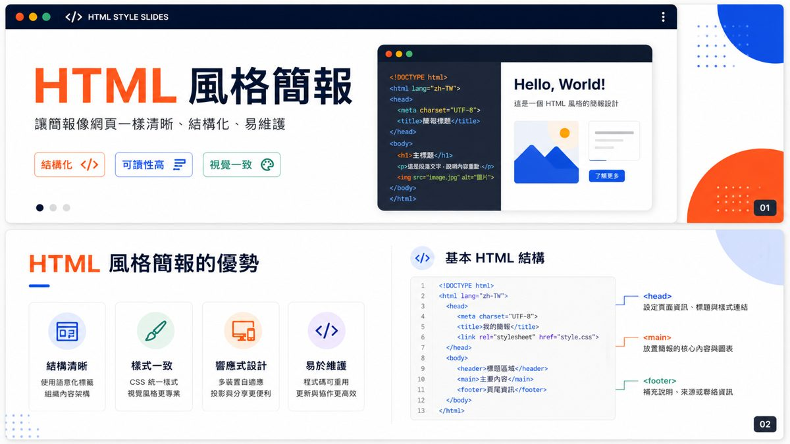
逐字稿（18:19–20:32）：講師現場用 Gamma 示範 HTML 版本輸出：「HTML它是一個雲端版的格式，它是一個線上格式，最近也非常非常紅……幫我做五張有關於無人機跟AI技術的HTML版本的簡報，那其中要有互動感，然後要有動畫感。」他說明特色：「我的簡報第一個，我不需要到我的PPT，我也不想要再多調，我想要一切所有的調整的方式全部都在線上，我demo的時候也在線上……你就可以直接輸出HTML版本的簡報。他的特色就是他會比較有互動感，然後他的渲染程度、他的簡報整個鋪陳會比較好看。」「那這個簡報的格式，他帶著就可以走，他其實就是一個網頁版本的概念而已。」
9. 真實學員 Q&A
以下問題直接來自直播 Google Meet 聊天室的真實學員留言，講師現場逐一回應。
10. 重點整理
- 六種工具各有定位：Gemini（Google生態系內建）、ChatGPT（Image 2.0 畫圖＋套版最方便）、Claude（PowerPoint增益集但需付費＋365）、NotebookLM（最會套版）、Gamma（最老牌，追上Agent浪潮）、Manus（已轉點數收費，較少人用來做簡報）。
- YAML／壓模格式：先鎖定 title / description / theme / slides 結構，讓輸出更聽話、更好複製風格。
- 字型或版型改不動的救援法：把圖片或整份 PDF 丟進 Canva，用「魔法圖層」解構成可個別編輯的物件。
- 多頁被合成一張圖：下指令時明確要求「16:9，每一張都分開」。
- 版權提醒：要求特定風格（如玩具總動員）時，改用「類似」「相似」的說法會更順利——「因為他現在版權抓得比較嚴，你跟他說類似、類似，他就會做。」
- 遇到專有名詞：先請 AI 用形容的方式解釋這個名詞，再按照它的說明去畫，效果更穩定。
- 建議提供自己的資料：「除非你很相信AI，或者你對這個領域非常熟悉，可以直接判斷資料是否正確；不然我還滿需要給他資料的。」
- 講師個人首選：「我簡報都怎麼做？ChatGPT跟Codex算是我的首選……我大概就把我想做的內容告訴他，還有我的想法告訴他，他就做一做。」
11. 資料來源與製作說明
- 原始教材：EP202607.22「生成式AI簡報工具：一次掌握6種簡報工具」官方課程簡報 13 頁（逐頁原圖全收錄）＋錄影回放（63.9 分鐘）；均為 anyone-reader 權限、公開可下載。
- 製作方式：下載完整錄影 → faster-whisper（small 模型）產出全 63.9 分鐘完整逐字稿 → 下載原始 pptx 取出 13 頁投影片原圖 → 對照場景切換擷取的實況截圖 → 逐頁親眼判讀並對照逐字稿整理成本頁章節。第 9 章「真實學員 Q&A」的問題文字直接來自錄影畫面中可讀到的 Google Meet 聊天室截圖，非杜撰。內容為真實課程內容，非推測改寫。
- 誠實揭露：逐字稿由語音辨識產生，對「Gemini」「Gamma」「Canva」等產品名稱偶有同音誤植（如「Jumper Line」「伽罵／Juma」「Kemba／CANBA」），本頁一律以官方簡報與畫面判讀為準做校正；第 7 章提到的另一款花絮工具因收音品質無法確認正確產品名稱，故未指名，僅忠實轉述功能描述。
- 介面參考：版型沿用本站 EP29–EP47 課堂筆記的乾淨白底編輯風格。